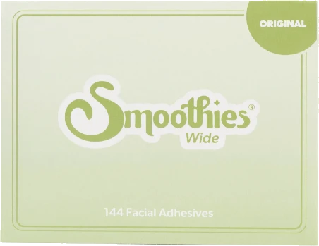
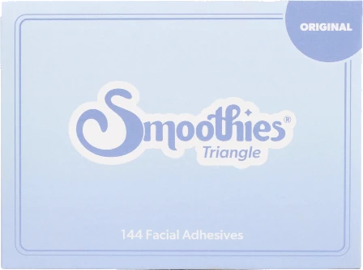
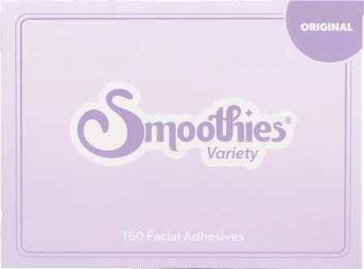
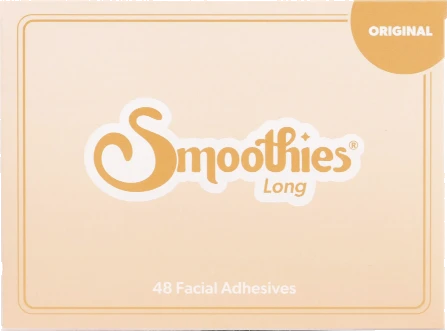
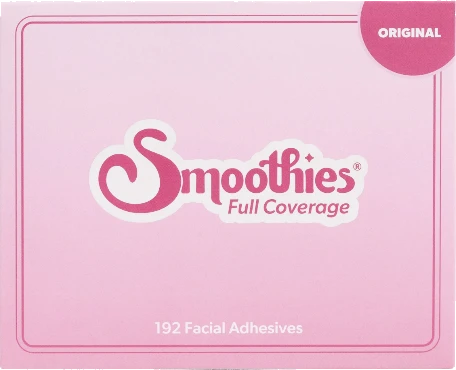
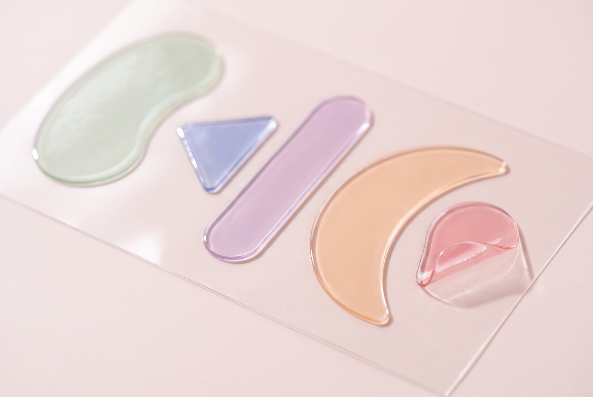

Smoothies® Original Triangle
Elevens, crow's feet and lip lines
A small triangle for the three places a face gathers first. The one most people start with, and the one most people reorder.
Wrinkle patches and sheet masks
Life shows up on our faces, in smiles, laughs and every expression in between. Our patches are here to smooth, hydrate and support your skin along the way.
Made in the USA Fragrance free Five shapes





The collection
A face does not crease at random. It creases where it moves. Each shape is cut for one of those places, which is why the range is sorted by where the line sits and not by how much you want to spend.

Elevens, crow's feet and lip lines
A small triangle for the three places a face gathers first. The one most people start with, and the one most people reorder.
Forehead lines, elevens, crow's feet and more
One box, six shapes, for the days when the line that bothers you is not the usual one. The sensible way to find out which shape is yours.
Forehead lines
A long strip that lies flat across the forehead, one inch high by four and a quarter wide. Not for use directly beneath the eyes.
Forehead lines, elevens, crow's feet and more
The widest coverage in the range, in an assortment of shapes and sizes. For a full face at once, rather than one line at a time.
Elevens, crow's feet and lip lines
The same three places the Triangle covers, in a larger triangle, for when one shape is not quite enough on its own.
What people said
Based on the results of a consumer perception study of 30 participants over a continuous 28 day period.
Instructions
Questions
Up to 10 hours in any 24 hour period, day or night. For best results wear them 4 to 5 times a week for 30 days, and after that as needed.
Some strips can be reused once or twice. If an edge leaves a mark on the skin, applying a used strip over that mark is the fix we recommend.
It is not recommended. How long to pause retinol before using them varies from person to person, so test first and ask a dermatologist if you are unsure.
Yes. The patches are mechanical: they hold the skin and do nothing to the muscle, so they sit alongside whatever else you are doing.
Promotions, new products and sales, directly to your inbox.